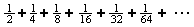
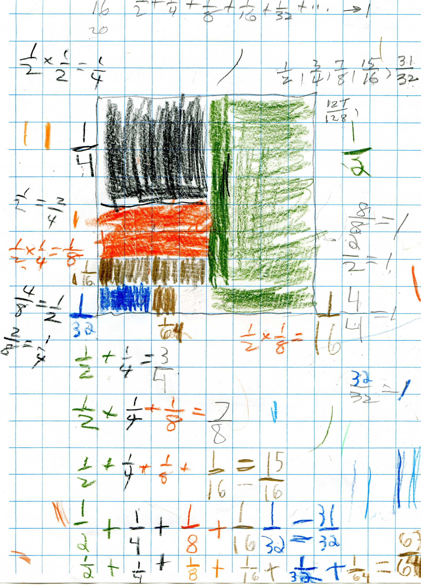
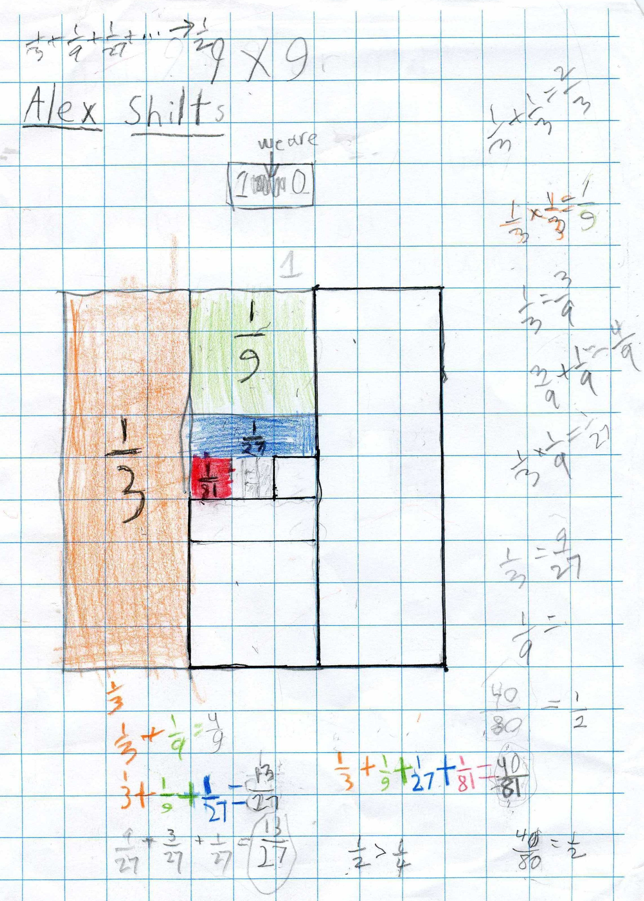
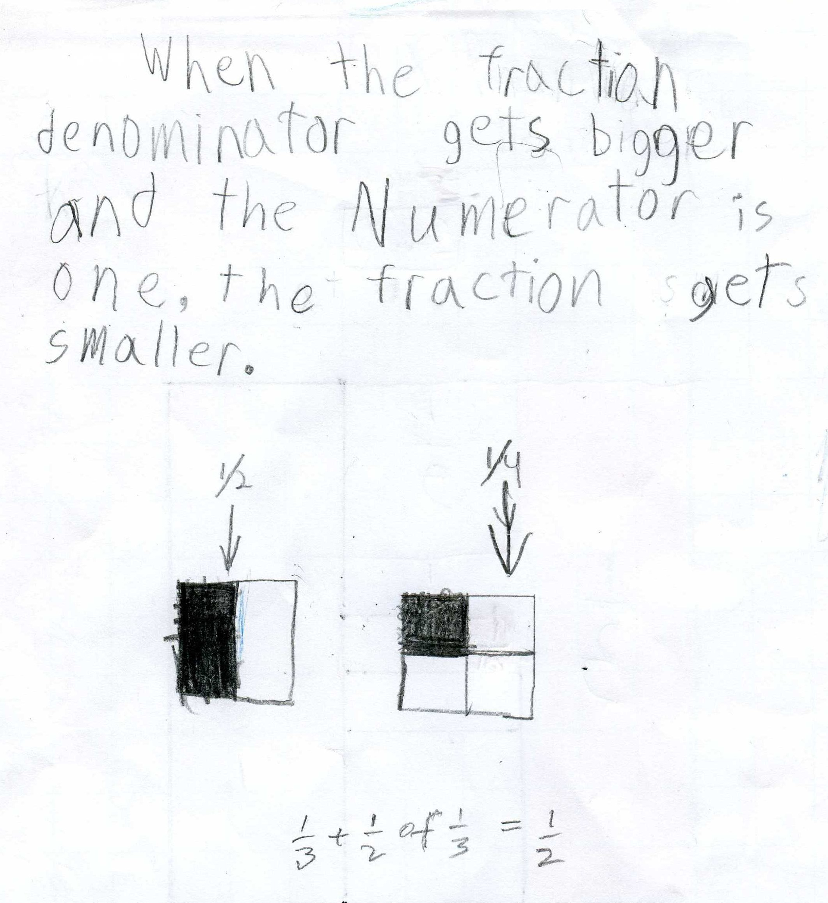
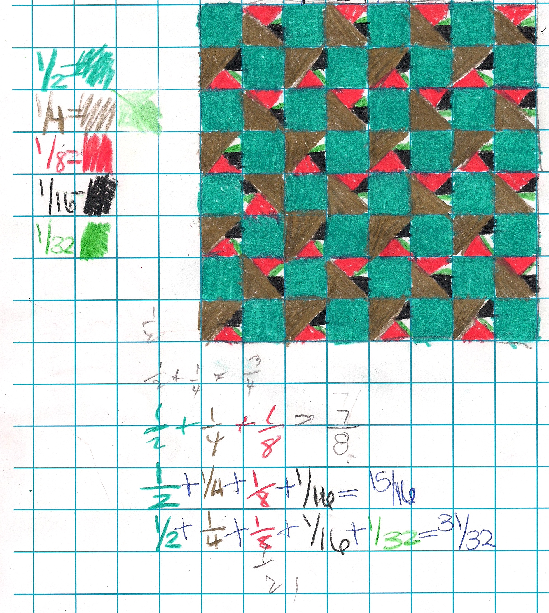

Alex, a 2nd grader, sees an infinite series!!
On July 21, 2008, was the second session Alex worked on the infinite series with Don.
Look at his paper below to see all the math he did: the whole cake (an 8x8 square) = 1, naming a fraction by counting how many of the pieces make the whole cake or 1 (4 of the black pieces make the whole cake, therefore the black piece is 1/4 of the cake, multiplying fractions (1/2 of 1/2 = 1/4), equivalent fractions (1/2= 2/4 and 4/8 = 1/2), fractions equal to 1 (8/8= 1, 2/2 = 1, 32/32 = 1), fractions less than 1 (7/8 < 1, 15/16< 1..), which is bigger 7/8 or 15/16? 15/16 > 7/8, the partial sums are 1/2, 3/4 =1/2+1/4, 7/8=1/2 +1/4 + 1/8...

Don asked Alex whether the partial sums 1/2, 3/4, 7/8, 15/16, 31/32 ...are getting bigger, smaller or staying the same. He realized they were getting bigger by looking at the picture. They talked about whether each partial sum is bigger or smaller than 1; since the top number was always 1 smaller than the bottom, he said they were always less than 1. Alex also saw that he could just double the bottom number to get the next bottom number.
Then Don asked what will happen if we keep adding the smaller pieces. This was the great thing he said:
"The whole picture above, will fit in the empty square at the bottom."!! He wrote "There is a charts in a charts, in charts in charts and so on."
"The series is approaching 1" he said.
See Alex's idea set in motion by Lori
Don was very excited about what Alex did and said. In all the years of teaching, Don had never seen anyone think about the infinite series this way!
Great job, Alex!!
2-11-09: Another of "Alex sees an Infinite Series"
Now in 3rd grade, and after much discussion about what he had here, over a few weeks time, Alex said that the infinite series 1/3 + 1/9 + 1/27 + 1/81 +... is going to 1/2. He agreed that 40/81 was smaller than 40/80 = 1/2.

But the exciting thing he noticed was that the orange shaded piece of 1/3 of the 9x9 square (which is 1), has a matching piece on the right, not shaded in, also 1/3. And the green piece (1/9), has a matching piece not shaded in, at the bottom, also 1/9. And there was an unshaded piece (below) matching the blue shaded piece of 1/27 and there was an unshaded piece to the right, matching the red shaded piece of 1/81. "The same thing would continue inside the middle square", he said. The shaded region would stay equal to the unshaded region, and each region would approach 1/2. Alex kept saying (Don wasn't sure why) that 1/3+1/2of1/3 =1/2 (which is true!). Don looked again at the center 1/3 section of the big square and he saw that 1/2 of that 1/3 will come close to be shaded and 1/2 will come close to be unshaded. Perhaps that is what Alex meant!
Great work, Alex!!
He also wrote this:

See Sidney's fine and unusual work below:

See Kirsten talking about her work 1/3 + 1/9 +... on video!